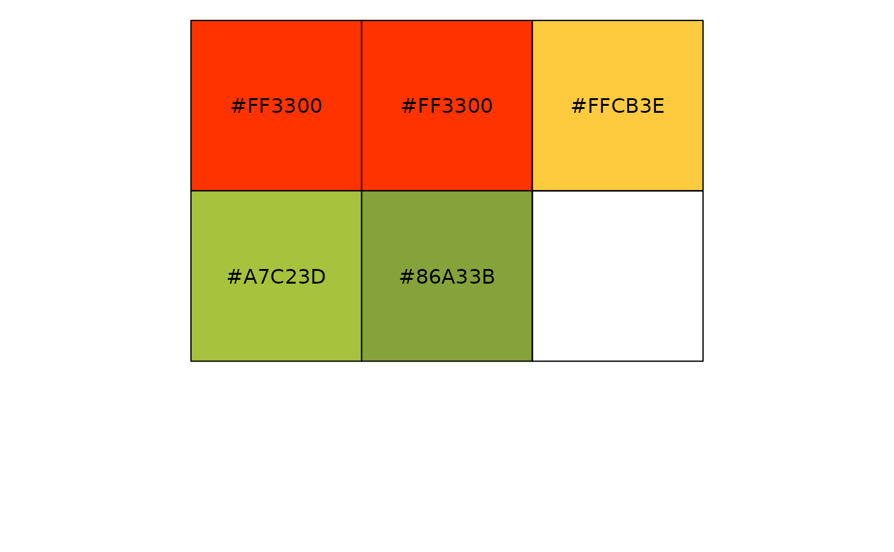

A small set of named, semantic palettes for survey reporting. Each is a
plain character vector of hex colours (some named) that you
can use directly or via the scale_*_rating() / scale_fill_nps() helpers.
Format
Each palette is a character vector of hex colour strings:
pal_ratingFive-point red -> amber -> green scale for 1-5 ratings, named
"1".."5".pal_npsThree NPS-group colours, named
"-1","0","1"(detractor / passive / promoter).pal_sequential_blueFour-step sequential blue, light to dark, for ordered brand questions.
pal_neutralA single neutral grey used for unbranded single-series bars.
Details
These are the semantic colour vocabularies behind the plot helpers: red ->
amber -> green for ratings (worse to better), a matching three-colour NPS
scale, a sequential blue for ordered brand questions, and a neutral grey for
plain single-series bars. Use them directly, or via the
scale_fill_rating() / scale_fill_nps() ggplot2 scales.
pal_rating follows the same thresholds as bands_rating_3(): ratings of 1
and 2 are BAD (red), 3 is OK (amber), 4 and 5 are GOOD (green). Keeping the
two in step matters – a point coloured amber sitting inside a red band is
the kind of contradiction that quietly misleads a reader.
See also
Other themes:
scale_fill_nps(),
scale_fill_rating(),
theme_ezrsurvey(),
theme_transparent()
Examples
pal_rating
#> 1 2 3 4 5
#> "#FF3300" "#FF3300" "#FFCB3E" "#A7C23D" "#86A33B"
scales::show_col(pal_rating)
